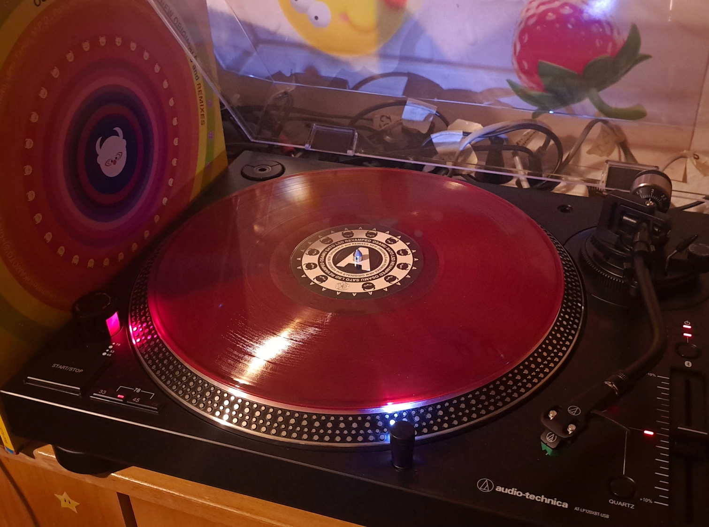
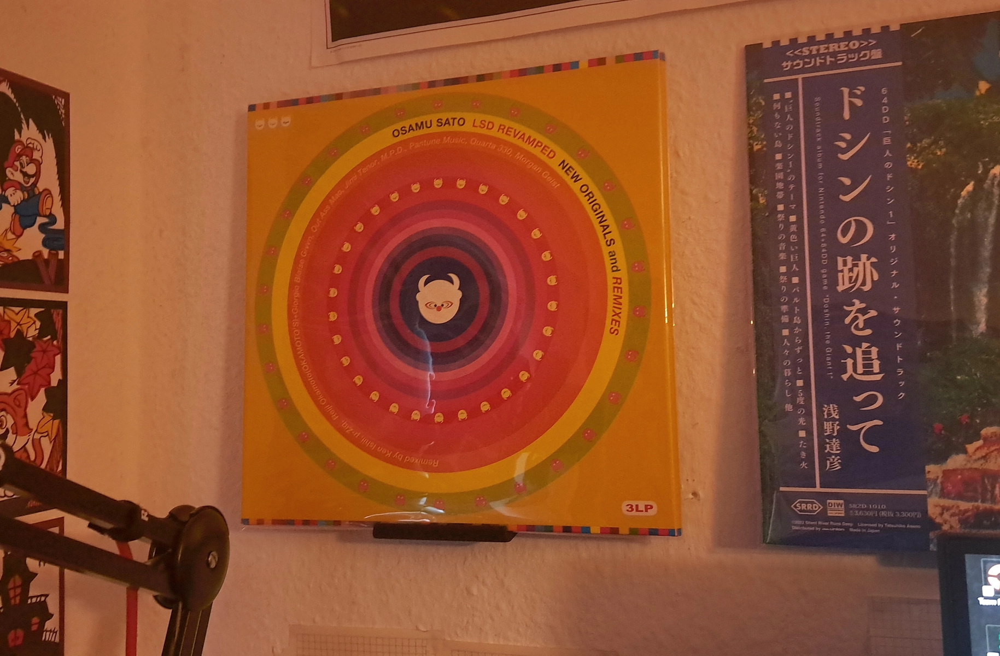

One of LSD: Dream Emulator's most memorable aspects, besides it's at times trippy visuals and bizzare characters, is it's soundtrack, being the different music patterns playing throughout the different drean worlds and the songs which play during LSD's many intro cutscenes.
Along with it's release on the Playstation 1 in 1998, Osamu Sato released a music album called LSD And Remixes, which contained all of the songs heard in LSD's cutscenes, both the original compositions by Osamu Sato as well as remixes composed by a handful of guest artists, like Jimi Tenor or μ-Ziq.
In 2018, Osamu Sato released LSD Revamped (not to be confused with the LSD Revamped project by Figglewatts), an Album containing all of the original guest remixes from 1998, as well as some new remixes by artists like Hakusi Hasegawa, Reiji Okamoto, Giorgio Blaise Givvn, and even by Osamu Sato himself !
The vinyl copy i own released in 2019, roughly a year after the original release on CD and streaming platforms. The album comes in a sizable gatefold sleeve, featuring some pretty cool artwork by Osamu Sato !
The album itself comes on 3 vinyl records, printed out of red, translucent plastic. They too look super cool and pretty unique !


I'm a huge fan of weird and experimental stuff ! Owning the soundtrack of the game that to this day still defines experimental and "out of the ordinary" games on vinyl is pretty amazing !
And to be honest it will probably be the only physical piece of official LSD media i will ever own ^^'
Just looking at the prices at which original copies of LSD: Dream Emulator go for makes my wallet wanna grow legs and run a marathon LMAO.
But if you're into genres like DnB, IDM or Techno, i highly recommend you give this album a listen ! It's available on all major streaming platforms !
